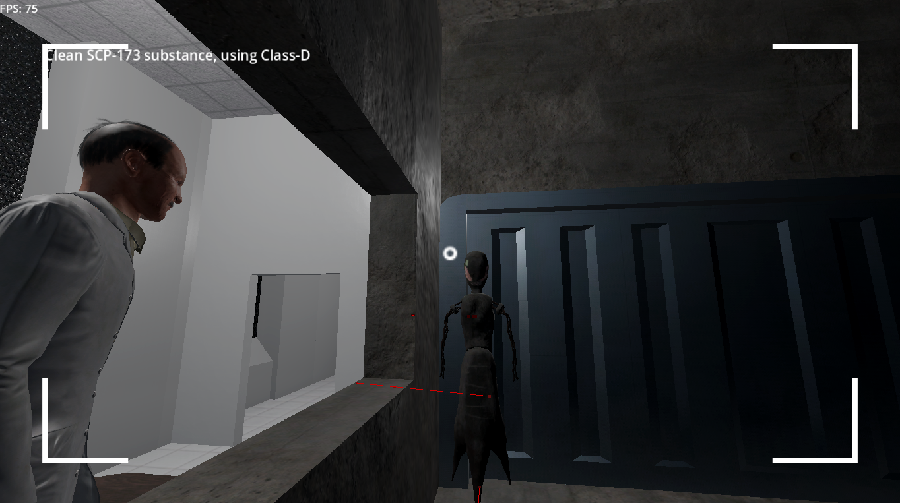

SCP: Containing Procedures
New game
Unfortunately, it is not that story game, I teased you before. This game is my return to SCP universe. It is a SCP Facility simulator - you need to test different anomalies (but you shouldn't let SCP escape (and in future: beware other threats)) Currently, Site-19 is in development, in the future, there will be different SCP Sites: Site-15 (where SCP-079 and other electronic anomalies contained) and others

Why I have abandon SCP: Outrun
The reason is simple:
Both this and SCP: Site Online were designed for competing with SCP: Secret Lab. I can say, that these (and future) attempts are designed to fail, because "why another game, if SCP: SL exist"
A new idea is needed!
And the idea came
Why not to create a SCP simulator? There were attempts before, but they were uninteresting and lost in the void. In my case, I will try to port this game on different platforms: it currently supports Android (optimized for tablet PCs) and Windows. In future Linux and Web support will be added.
This game is free as in a freedom!
And one feature, what this game differs from... most SCP games - it is open-source! You can visit my repo to contribute. There is also a roadmap for near future (gameplay mechanics and Site-19)!